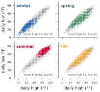
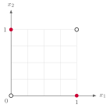
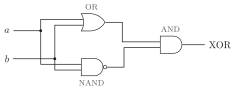
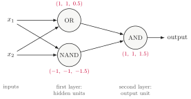
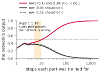
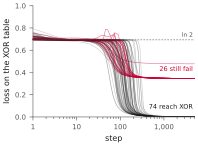
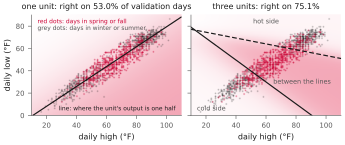

NJIT · CS 301 · INTRODUCTION TO DATA SCIENCE · FALL 2026 PDF
Meeting 8. More Than One Neuron
Review Cheaper Steps and Held-Out Days Act 1 Units Side by Side · Act 2 Units in Layers · Act 3 Units Trained Together
Meetings 2 to 7 built, trained and evaluated one unit. One unit answers one yes-or-no question, and its boundary is one line. This meeting puts several units together in three ways. Side by side, they choose among more than two classes. In layers, they compute XOR, which no single unit computes. Training all units on a shared loss determines the intermediate functions that each unit computes.
Act 0. Review: cheaper steps and held-out days
0.1 Batches, updates and epochs
A batch is the set of rows used for one gradient computation and one update. A mini-batch is a batch smaller than the training set. An epoch is one pass over the training set, in which every row is used once. The number of updates in an epoch is the number of batches:
| Batch size | Learning rate | Updates per epoch | Loss after one epoch |
|---|---|---|---|
| 4,316 | 1 | 1 | 0.4519 |
| 256 | 1 | 17 | 0.2411 |
| 32 | 0.5 | 135 | 0.2262 |
| 1 | 0.1 | 4,316 | 0.2222 |
Each run processes all 4,316 training days. With batches of 32, the product of batch size and number of updates is \(32\times135= 4{,}320\), because the last batch has only 28 days. Each run therefore uses every day once and does about the same amount of arithmetic. The runs differ in how that arithmetic is divided into updates. More updates let the unit adjust its parameters more often, and in these runs the loss after one epoch is lower when the batches are smaller.
Frequent updates are similar to frequent quizzes: each provides feedback before the next part of the work, rather than only at the end.
Smaller batches also produce noisier gradient estimates. With a fixed learning rate, the one-row run does not settle: over the last five of twenty epochs its loss moves between \(0.2219\) and \(0.2229\). With a learning rate that decreases during training, the five losses all round to \(0.2217\).
Momentum keeps part of the previous update and adds it to the current one. The unit then moves in a direction that several recent batches agree on, and single batches that disagree have less effect. Meeting 7’s notes give the update.
0.2 Held-out days
We need to estimate how well a model trained on past records will perform on new days. Some weather models use physical equations for the motion of air and water; others learn from past observations, as our unit does. To evaluate our unit, we reserve some later records and exclude them from training:
| Set | Years | Days | Used for |
|---|---|---|---|
| Training | 2006–2017 | 4,316 | the gradient updates |
| Validation | 2018–2021 | 1,457 | choosing between models, and when to stop |
| Test | 2022–2024 | 1,092 | one final measurement |
Validation days are used to compare models, not to compute parameter updates. For example, train one unit at learning rate \(0.1\) and another at \(0.2\), or one on standardized inputs and one on raw inputs: after the same number of steps the two have different parameters. We choose the model with lower validation loss. If validation loss stops improving, we can stop training and use the parameters from the best validation step.
0.3 Which step to keep
Suppose only 20 training days are available. The training loss falls toward zero: the unit comes to classify all 20 days correctly and then grows more confident with every step. On the validation days the loss falls to about \(0.206\) near step 28 and then rises, to \(0.4448\) at step 1,000 and \(1.0687\) at step 20,000. A closer fit to the training sample that gives worse predictions on held-out data is overfitting.
A student who has every question of a practice quiz, with its answer, can memorize them and make no mistakes on that quiz. The score says little about new questions. To estimate that, the student sets some questions aside before studying and answers them afterwards.
Each training step produces a new set of parameters. We keep the set with the lowest validation loss, which in this run occurs near step 28.
Act 1. Units side by side
1.1 More than two answers
One sigmoid unit answers one yes-or-no question, such as whether a day is in the warm half of the year. Its output is one probability. Many questions have more than two possible answers:
- Which of the four seasons is this day in?
- A cash machine reads the amount written on a deposited check. For each character it must decide which of the ten digits it is.
- A language model continues a sentence. At each step it decides which word, or piece of a word, comes next, out of many thousands.
Each possible answer is a class, and \(K\) is the number of classes. The first question has \(K=4\) and the second has \(K=10\). The same data can be used for different classification tasks: with records from many places, the class could be the region the record came from.
1.2 One unit for each season
The label is the season of the day: winter is December to February, spring March to May, summer June to August, and fall September to November. We use the date to determine the label and exclude it from the inputs. We use the daily high and low, with the same standardization and split by years as in meeting 7. The training years have 1,054 winter days, 1,104 spring days, 1,101 summer days and 1,057 fall days.

Winter days are at the lower left and summer days at the upper right. Spring and fall days overlap in the middle: the mean high is \(63.1\) in spring and \(67.1\) in fall, and the mean low is \(44.8\) and \(50.3\).
We first train four units independently. One-vs-rest gives each class its own unit and its own yes-or-no question. The winter unit is trained on “is this day in winter?”, with label 1 for the winter days and label 0 for all the others, the rest. The spring, summer and fall units are trained in the same way on their own questions. Each is meeting 7’s unit with a different column of labels, trained from all-zero parameters at \(\eta=1\) for 3,000 steps. On the 1,457 validation days:
| Unit | Accuracy | Predicts 1 on | Always-0 accuracy |
|---|---|---|---|
| winter | 85.4% | 339 days | 75.3% |
| spring | 74.8% | 13 days | 74.9% |
| summer | 90.1% | 403 days | 74.8% |
| fall | 75.0% | 0 days | 75.0% |
About three days in four are not in any given season. A unit that answers “no” on every day is therefore right on about 75% of the days. This gives a baseline for classification accuracy. The winter and summer units exceed it; the spring and fall units do not. The fall unit never predicts 1, and its outputs stay between \(0.16\) and \(0.32\). The figure shows a limitation of these classifiers. Spring days lie between winter days and summer days. One unit draws one line, and no line has the spring days on one side and all the other days on the other side.
1.3 Predicting by argmax
To predict a day’s season, evaluate all four units and choose the class whose unit has the largest output. The argmax of a list is the position of its largest value, not the value.
| Day | winter | spring | summer | fall | sum |
|---|---|---|---|---|---|
| November 6, 2024 (fall) | 0.00 | 0.23 | 0.56 | 0.27 | 1.06 |
| January 7, 2014 (winter) | 0.99 | 0.37 | 0.00 | 0.17 | 1.53 |
| October 15, 2019 (fall) | 0.05 | 0.22 | 0.05 | 0.25 | 0.57 |
For November 6, 2024 the largest output is \(0.56\), in the third position, so the prediction is summer. The day was in fall. It had a high of \(82.9\) and a low of \(63.0\), and it is the warm November day that the single unit of meeting 3 also misclassified.
This prediction rule has accuracy \(61.4\%\) on the training days and \(58.1\%\) on the validation days. Always predicting the same season would give about \(25\%\) accuracy.
The argmax compares the four outputs with each other, not with one half. On October 15, 2019 no unit says yes, and fall is predicted with an output of \(0.25\). The fall unit never exceeds \(0.32\), yet fall is the prediction on 188 validation days, and 73 of those are fall days. Combining the four units with argmax creates a prediction region in the middle of the plot that a single unit cannot define.
The four outputs of one day need not add to 1. In the table they add to \(1.06\), \(1.53\) and \(0.57\), and over the validation days the sum runs from \(0.53\) to \(1.72\). Each unit was trained alone on its own question. Their losses impose no constraint on the sum of their outputs. On January 7, 2014 the winter unit gives \(0.99\) and the spring unit still gives \(0.37\). A day is in exactly one season, so probabilities of the four seasons must add to 1. These independent estimates therefore do not form a probability distribution over the seasons.
1.4 Softmax
Each unit computes a score from the same inputs, with its own weights and bias:
The softmax turns the \(K\) scores into \(K\) probabilities:
Every probability has the same denominator, the sum of all \(K\) exponentials. The numerator of \(p_k\) is the one exponential that belongs to unit \(k\). Four properties follow from the formula.
- Every \(p_k\) is positive. The exponential \(e^{s}\) is positive for every \(s\), so \(p_k\) is a positive number divided by a sum of positive numbers.
- Every \(p_k\) is below 1. The numerator \(e^{s_k}\) is one of the terms of the denominator, and the other terms are positive.
- The \(p_k\) add to 1. They share one denominator, so their sum has the numerator \(e^{s_1}+\dots+e^{s_K}\) over that same expression.
- The order of the scores is kept. A larger score gives a larger exponential and the denominator is shared, so the largest score receives the largest probability. The argmax of the probabilities is the argmax of the scores they were computed from.
The sigmoid is a special case of softmax. With two classes and scores \((s,0)\),
Adding the same number \(c\) to every score multiplies every exponential by \(e^{c}\), which cancels between numerator and denominator. The probabilities depend only on the differences between the scores. This is why two classes need only one score.
Softmax has a useful relationship with cross-entropy. The logarithm in the loss simplifies the exponential in the numerator:
Example 1.1 A softmax by hand
Suppose a softmax model gives a warm November day the scores \(-1\), \(0\), \(2\) and \(1\) for winter, spring, summer and fall. The exponentials, rounded to two decimals, are \(e^{-1}\approx0.37\), \(e^{0}=1\), \(e^{2}\approx7.39\) and \(e^{1}\approx2.72\). Their sum is
Divide each exponential by this sum:
| winter | spring | summer | fall | sum | |
|---|---|---|---|---|---|
| score \(s_k\) | \(-1\) | \(0\) | \(2\) | \(1\) | |
| \(e^{s_k}\) | 0.37 | 1 | 7.39 | 2.72 | 11.48 |
| \(p_k\) | 0.03 | 0.09 | 0.64 | 0.24 | 1.00 |
For winter, \(0.37/11.48\approx0.03\). The largest probability is \(0.64\), so the model predicts summer. The largest score was also summer’s.
The loss of the day is \(-\ln\) of the probability given to its true season. The day was in fall, so its loss is \(-\ln0.24\approx1.43\). Had the day been in summer, the loss would have been \(-\ln0.64\approx0.45\). With unrounded values the two losses are \(1.44\) and \(0.44\), approximately \(\ln 11.475-1\) and \(\ln 11.475-2\), respectively.
1.5 The label as a list, and the loss for \(K\) classes
As in meeting 4, the loss of a row is the negative logarithm of the probability assigned to its true class. We now use a vector to represent the label. With two classes the label was one number, 0 or 1. With \(K\) classes, write the label of a row as \(K\) numbers:
In the order winter, spring, summer, fall, the label of a fall day is \((0,0,0,1)\). A list with one entry equal to 1 and all others equal to 0 is called a one-hot vector. The loss of a row is
Every term with \(y_k=0\) is zero, and one term remains. The sum is a way to write “take the probability of the true class”.
Example 1.2 The loss of November 6, 2024
The softmax model trained in the next section gives this day the probabilities below. The day was in fall.
| winter | spring | summer | fall | sum | |
|---|---|---|---|---|---|
| output \(p_k\) | 0.002 | 0.162 | 0.561 | 0.275 | 1 |
| label \(y_k\) | 0 | 0 | 0 | 1 | 1 |
The model predicts summer with probability \(0.561\), but the loss uses the probability \(0.275\) assigned to the true class, fall.
The label and the output are both lists of \(K\) nonnegative numbers that add to 1, so both are probability distributions over the classes. The label puts all of its probability on the true class. The loss compares the two distributions. It is the cross-entropy of meeting 7’s review, with the label as the outcome probabilities and the model’s output as the model probabilities.
With \(K=2\) the lists are \((y,1-y)\) and \((\hat y,1-\hat y)\), and the sum is meeting 4’s formula, \(-y\ln\hat y-(1-y)\ln(1-\hat y)\).
The loss of a model is the average of \(\ell\) over its rows. A model that gives \(1/4\) to every season on every day has loss \(\ln4\approx1.386\). That is the reference value for four classes, as \(\ln2\approx0.693\) was for two.
1.6 Training the four units together
The softmax model has four units, each with two weights and a bias: twelve parameters. It has one loss, the average of \(-\ln p_{\text{true class}}\) over the training days. Gradient descent changes all twelve parameters at every step.
The gradient has the form it had in meeting 6. For the weight of unit \(k\) on input \(j\), the derivative of the loss is the average over the rows of
and for the bias of unit \(k\) it is the average of \(p_k-y_k\). This is (error) \(\times\) (input), with one error per unit. For a fall day with output \((0.002,0.162,0.561,0.275)\) the four errors are \(+0.002\), \(+0.162\), \(+0.561\) and \(-0.725\): the scores of winter, spring and summer should come down, and the score of fall should go up. The training loop is meeting 6’s loop with four errors per row.
In the softmax model, the error of unit \(k\) is \(p_k-y_k\), and \(p_k\) is computed from all four scores. If the summer unit’s score for a day rises, the probabilities of the other three seasons for that day fall, and their errors change. A separately trained unit has the error \(\sigma(s_k)-y_k\), which depends on that unit’s own score. In the softmax model no unit reads another unit’s output, but each unit’s update depends on all four scores through the shared loss.
From all-zero parameters at \(\eta=1\):
| Training days | Validation days | |||
|---|---|---|---|---|
| Step | loss | accuracy | loss | accuracy |
| 1 | 1.1378 | 50.0% | 1.1381 | 49.7% |
| 10 | 0.9251 | 59.0% | 0.9270 | 57.4% |
| 100 | 0.8359 | 62.0% | 0.8384 | 58.7% |
| 1,000 | 0.8309 | 61.5% | 0.8352 | 59.3% |
| 5,000 | 0.8309 | 61.5% | 0.8352 | 59.3% |
At all-zero parameters every score is zero and every probability is \(1/4\), so the loss starts at \(\ln4\approx1.386\). On the test years the trained model has loss \(0.8186\) and is right on \(61.0\%\) of the days.
1.7 Two models, trained differently
The two season classifiers differ in how they are trained:
| Four separate units | Softmax model | |
|---|---|---|
| Output of unit \(k\) | \(\sigma(s_k)\) | \(p_k\) |
| Computed from | the unit’s own score | all four scores |
| Outputs of one day | need not add to 1 | add to 1 |
| Loss | one for each unit | one for the model |
| Trained | one unit at a time | all four units together |
| Prediction | argmax of the outputs | argmax of the outputs |
| Validation accuracy | 58.1% | 59.3% |
Softmax preserves the argmax of fixed scores. The sigmoid and the softmax both keep the order of the scores. If the scores of the four separate units were passed through a softmax, the outputs would add to 1 and the argmax would be the same on every day. For November 6, 2024 the separate units’ scores are \(-5.43\), \(-1.20\), \(+0.23\) and \(-0.99\). Their sigmoids are \(0.00\), \(0.23\), \(0.56\) and \(0.27\). Their softmax is \(0.00\), \(0.16\), \(0.65\) and \(0.19\). Summer is the largest in all three lists.
Separate training produces different scores. The models were trained on different losses and have different weights. For the same day the softmax model’s scores are \(-3.71\), \(+0.65\), \(+1.89\) and \(+1.18\). Both models name summer on that day. On 160 of the 1,457 validation days, \(11.0\%\) of them, the two models name different seasons.
Example 1.3 One day, two predictions
October 1, 2018 was a fall day with a high of \(79\) and a low of \(59\).
| winter | spring | summer | fall | prediction | |
|---|---|---|---|---|---|
| four separate units | 0.01 | 0.25 | 0.32 | 0.26 | summer |
| softmax model | 0.01 | 0.28 | 0.32 | 0.39 | fall |
The summer output is \(0.32\) in both models. The fall output is \(0.26\) in one and \(0.39\) in the other, and that decides the argmax. The outputs of the four separate units add to \(0.83\) before rounding, and the softmax model’s add to \(1.00\).
![Two plots of daily low against daily high, each divided into four regions labelled winter, spring, summer and fall. Left: the regions of the four separately trained units with an argmax, with 58.1 percent validation accuracy. Right: the regions of the softmax model, with 59.3 percent validation accuracy. The boundaries are straight lines in both panels and lie in different places. The 160 validation days on which the two predictions differ are drawn as dark dots along the boundaries, and October 1, 2018 is ringed.](images/seasons-two-models.svg)
The figure colours each point of the plane by the season a model predicts there. The dark dots are the 160 days, and they lie along the boundaries, where a small change in the scores changes the argmax. Of these days, 49 are named summer by the separate units and fall by the softmax model, 41 spring and then fall, 39 winter and then spring, 19 fall and then spring, and 12 winter and then fall.
In both panels every boundary is straight. The boundary between two classes \(j\) and \(k\) is where their scores are equal,
which is the equation of a line. The resulting regions have boundaries made of straight line segments.
The two models have similar accuracies. We can also compare their cross-entropy losses by passing the separate units’ scores through a softmax. The cross-entropy on the validation days is \(0.8639\). The softmax model’s is \(0.8352\). The softmax model was trained to make this number small, whereas the separate units minimized four binary losses.
1.8 The interactive page, and temperature
The page Four units, one answer shows both models. The plane is coloured by the predicted season, and the dots are the validation days.
- Click on the plane: at the lower left, at the upper right, and then in the middle, where the spring and fall probabilities are nearly equal. The page shows the four scores of the point, the four outputs and the predicted season for the selected high and low, even if that combination does not occur in the data.
- Choose November 6, 2024 from the named days. The probabilities are \(0.002\), \(0.162\), \(0.561\) and \(0.275\), and the loss is \(1.29\).
- Switch the model to four separate units. The outputs of the same day add to \(1.06\), and some of the coloured regions change because the two models have different weights. Under each bar the page now shows that unit’s own loss, because each of the four units has its own loss and there is no one loss of the four.
- Press other model’s boundaries. The boundaries of the model that is not selected are drawn as dashed lines over the plane, so both sets of boundaries can be compared. The readout names the season the other model predicts for the chosen point. Choose October 1, 2018: the softmax model predicts fall and the four separate units predict summer.
- Switch back to softmax and move the temperature slider.
The page divides every score by a temperature \(T>0\) before the softmax. This is meeting 3’s \(T\). For November 6, 2024:
| \(T\) | 0.25 | 1 | 4 | 10 |
|---|---|---|---|---|
| probability of summer | 0.939 | 0.561 | 0.355 | below 0.30 |
At \(T=10\) the four probabilities all lie between \(0.17\) and \(0.30\). The predicted season does not change, and the coloured regions do not move, because dividing by a positive number keeps the order of the scores. As \(T\) approaches zero, a unique largest score receives a probability approaching 1 and the others approach 0.
When a language model produces text, it computes a score for every token in its vocabulary, turns the scores into probabilities with a softmax, and samples the next token from those probabilities. A token may be a word or part of a word. The “temperature” setting of such a model is this \(T\). A low temperature concentrates probability on the most likely tokens. A high temperature makes less likely tokens more probable.
We hold \(T\) fixed during training. Changing it afterwards rescales the scores. With the trained weights fixed, the validation loss of the softmax model is \(1.4664\) at \(T=0.25\), \(0.9644\) at \(T=0.5\), \(0.8352\) at \(T=1\), \(0.9044\) at \(T=2\) and \(1.0436\) at \(T=4\).
1.9 Season classification results
The table counts the validation days by true season and predicted season, for the softmax model. A table of this kind is a confusion matrix.
| Predicted | |||||
|---|---|---|---|---|---|
| True season | winter | spring | summer | fall | correct |
| winter (360 days) | 280 | 67 | 0 | 13 | 77.8% |
| spring (366) | 93 | 137 | 25 | 111 | 37.4% |
| summer (367) | 0 | 5 | 331 | 31 | 90.2% |
| fall (364) | 52 | 103 | 93 | 116 | 31.9% |
Of the 366 spring days, 137 were called spring, 111 fall, 93 winter and 25 summer. No summer day was called winter and no winter day was called summer. The mistakes are between seasons with neighbouring temperatures, and most of all between spring and fall.
The errors reflect limitations in both the inputs and the model.
A limit in the inputs. An April day and an October day can have the same high and the same low. No model that reads only these two temperatures can give them different answers.
A limit in the unit. Spring lies between winter and summer, and one line cannot enclose a band. Side by side with an argmax, four units did mark out a middle region. The question also changed, from yes-or-no to which-of-four. For a yes-or-no question whose “yes” days lie between two groups of “no” days, one unit still fails.
Act 2. Units in layers
2.1 Why one unit cannot compute XOR
XOR gives 1 when exactly one of its two inputs is 1.

Meeting 2 ended with an attempt to place a line for this table. Of the 70 students who answered Review Quiz 2, 47 reported that three of the four rows was the most they got right. A search agrees: on a grid of 531,441 settings, with each of \(w_1\), \(w_2\) and \(\theta\) running from \(-10\) to \(10\) in steps of \(0.25\), the most rows any setting gets right is three.
The grid search covers only a finite set of parameters. A working setting could lie between its points or outside its range, so we need a proof that covers all parameter values. Meeting 5 turned the AND table into conditions on the three parameters, and the same method gives the proof for XOR.
Example 2.1 Four conditions that cannot all hold
A threshold unit fires when \(w_1x_1+w_2x_2\ge\theta\). Substitute the inputs of each row and write what the row requires. A row with output 1 requires the unit to fire. A row with output 0 requires it not to fire, so its score must be below \(\theta\).
| \(x_1\) | \(x_2\) | XOR | score | condition |
|---|---|---|---|---|
| 0 | 0 | 0 | \(0\) | \(0<\theta\) |
| 0 | 1 | 1 | \(w_2\) | \(w_2\ge\theta\) |
| 1 | 0 | 1 | \(w_1\) | \(w_1\ge\theta\) |
| 1 | 1 | 0 | \(w_1+w_2\) | \(w_1+w_2<\theta\) |
Add the conditions of the two middle rows:
The first row says \(\theta>0\), so \(2\theta>\theta\), and therefore
The last row says \(w_1+w_2<\theta\). Both cannot be true. No setting of \((w_1,w_2,\theta)\) satisfies the four conditions, so no threshold unit computes XOR.
The first row is where the conditions are most often written wrongly, as \(0\ge\theta\). That is the condition for the unit to fire on \((0,0)\), and the table requires the opposite. Any setting tried in meeting 2 can be tested against the four conditions: it breaks at least one of them, and the broken condition names the row it gets wrong.
2.2 A property of the unit
This limitation follows from the unit’s linear decision boundary and holds regardless of the training method. A sigmoid unit’s output is at least one half exactly where its score is at least zero, which is the same side of the same line.
Gradient descent shows the same limit. At all-zero parameters a sigmoid unit gives \(0.5\) on every row of the XOR table. Its errors are \(+0.5\), \(-0.5\), \(-0.5\) and \(+0.5\), every derivative is zero, and descent does not move. From five random starts, 20,000 steps at \(\eta=1\) bring the parameters close to zero each time. Every output is near \(0.5\) and the loss is near \(\ln2\approx0.6931\). The lowest loss a single sigmoid unit reaches on this table is the loss of answering one half on every row.
Along the direction \(x_1+x_2\) the rows have the sums 0, 1, 1 and 2, and their labels read 0, 1, 1, 0. The rows labelled 1 lie between the rows labelled 0. This is the spring unit’s difficulty of Act 1, with four rows in place of four thousand days.
The limits of single units were studied by Minsky and Papert, Perceptrons (1969). Rumelhart, Hinton and Williams (1986) showed that the method of Act 3 can train hidden units to compute useful intermediate results.
2.3 XOR from three gates
Meeting 1 built circuits out of gates. XOR has a circuit too:
In words: at least one input is on, and not both are on.

The gates are in two layers. The OR gate and the NAND gate form the first layer: both read the inputs \(a\) and \(b\). Neither reads the other’s output, so neither has to wait for the other, and the two can be computed at the same time. The AND gate is the second layer. It reads the two outputs of the first layer and can be computed only after them. The cerebral cortex is also arranged in layers of neurons.
Meeting 2 set a threshold unit’s weights by hand for AND, and the same was done for OR and NAND. The circuit can therefore be built from three units.
Example 2.2 Through two layers
The three units below have weights and thresholds set by hand. The numbers under each unit are \((w_1,w_2,\theta)\), and each unit fires when \(w_1\times(\text{first input})+w_2\times(\text{second input}) \ge\theta\). The first input of the AND unit is the output of the OR unit, and its second input is the output of the NAND unit.

Take the row \((x_1,x_2)=(0,1)\). The two first-layer units are computed first:
Their outputs are the inputs of the AND unit:
The network gives 1 on the row \((0,1)\), as XOR does. The four rows:
| OR unit | NAND unit | AND unit | |||||
|---|---|---|---|---|---|---|---|
| \(x_1\) | \(x_2\) | sum | output | sum | output | sum | output |
| 0 | 0 | \(0\) | 0 | \(0\) | 1 | \(1\) | 0 |
| 0 | 1 | \(1\) | 1 | \(-1\) | 1 | \(2\) | 1 |
| 1 | 0 | \(1\) | 1 | \(-1\) | 1 | \(2\) | 1 |
| 1 | 1 | \(2\) | 1 | \(-2\) | 0 | \(1\) | 0 |
The last column is 0, 1, 1, 0, which is XOR. In the NAND unit’s last row the sum is \(-2\), which is below \(-1.5\), so the unit does not fire. Each unit has two weights and a threshold, so the network has nine parameters.
2.4 The same wiring, with trained units
A network is a set of units in which some units read the outputs of other units. A layer is a group of units at the same stage of the network. Here the first layer is the OR unit and the NAND unit, which read \(x_1\) and \(x_2\), and the second layer is the AND unit, which reads their outputs. The AND unit is the output unit: its output is the network’s answer. The OR unit and the NAND unit are hidden units: their outputs are intermediate results, passed to the next layer. The four units of Act 1 were side by side and read the same inputs, and none of them read another’s output. They were not a network in this sense.
Now replace each hand-set unit by the sigmoid unit that meeting 6 trained from its truth table, 200 steps from all-zero parameters at \(\eta=4\). In the form \((w_1,w_2,\theta)\) the trained units are
| Row | \((0,0)\) | \((0,1)\) | \((1,0)\) | \((1,1)\) |
|---|---|---|---|---|
| the network’s output | 0.030 | 0.956 | 0.956 | 0.032 |
The outputs on the two middle rows are above one half and the other two are below, so the trained network classifies all four XOR inputs correctly.
The hidden units pass their outputs on as they are, as probabilities. They are not rounded to 0 or 1 before the output unit reads them. Only the final output is compared with one half. A circuit of gates passes zeros and ones between its layers. A network of sigmoid units passes real numbers.
Nine parameters are too many for a grid. With 25 values for each parameter there are \(25^9\approx4\times10^{12}\) settings.
2.5 What the second layer receives
![Two panels. Left: the unit square with the XOR corners (0,1) and (1,0) filled, cut by the OR unit's line and the NAND unit's line, with the strip between them shaded. Right: the plane of the two first-layer outputs, the OR unit's on the horizontal axis and the NAND unit's on the vertical; each point is named after its row of the table; rows (0,1) and (1,0) land together near the upper right corner, and one line, the AND unit's, separates them from row (0,0) near the upper left corner and row (1,1) near the lower right corner.](images/xor-two-planes.svg)
The left panel is the plane of the inputs. The OR unit’s line is \(x_1+x_2=0.44\) and the NAND unit’s line is \(x_1+x_2=1.52\). The two rows labelled 1 lie between the two lines.
The right panel is the plane of the two hidden outputs, \(h_1\) from the OR unit and \(h_2\) from the NAND unit. This is what the AND unit reads. It is a different plane from the left one. Each row of the table is drawn at its two hidden outputs and named after its inputs. The name “row \((0,0)\)” says which row of the table the point is; the point’s position in this plane is \((h_1,h_2)\):
| Row \((x_1,x_2)\) | \((h_1,h_2)\) | XOR |
|---|---|---|
| \((0,0)\) | \((0.03,\ 1.00)\) | 0 |
| \((0,1)\) | \((0.99,\ 0.97)\) | 1 |
| \((1,0)\) | \((0.99,\ 0.97)\) | 1 |
| \((1,1)\) | \((1.00,\ 0.04)\) | 0 |
The row \((0,0)\) is near the upper left corner of this plane, because on that row the OR unit gives a value near 0 and the NAND unit a value near 1. The two rows labelled 1 are at the same point, near the upper right corner. One line separates them from the other two rows: the AND unit’s line, \(h_1+h_2=1.52\).
The first layer transforms the original inputs into two new inputs that a single line can separate. Meeting 7’s filter also transformed the inputs, but used a rule we specified. The first layer’s transformation has parameters that can be trained.
2.6 Errors when combining separately trained units
The three units were trained separately, each on its own truth table. Train each of them for the same number of steps, wire them together, and vary that number:
| On row \((0,1)\) | AND alone | The network on | Rows | |||||
|---|---|---|---|---|---|---|---|---|
| Steps | OR | NAND | on \((1,1)\) | \((0,0)\) | \((0,1)\) | \((1,0)\) | \((1,1)\) | right |
| 5 | 0.84 | 0.72 | 0.54 | 0.369 | 0.420 | 0.420 | 0.387 | 2 |
| 10 | 0.88 | 0.77 | 0.65 | 0.342 | 0.493 | 0.493 | 0.360 | 2 |
| 20 | 0.92 | 0.83 | 0.76 | 0.261 | 0.612 | 0.612 | 0.280 | 4 |
| 50 | 0.96 | 0.91 | 0.88 | 0.129 | 0.802 | 0.802 | 0.142 | 4 |
| 200 | 0.99 | 0.97 | 0.96 | 0.030 | 0.956 | 0.956 | 0.032 | 4 |
| 2,000 | 1.00 | 1.00 | 1.00 | 0.003 | 0.996 | 0.996 | 0.003 | 4 |

From step 5 on, every part classifies the four rows of its own truth table correctly. The network is right on all four rows of XOR only from step 11 on. From step 5 to step 10, every part passes its own test and the network is wrong on two rows.
Consider the row for 10 steps. The AND unit was trained on inputs that are exactly 0 or 1. After 10 steps its parameters are \((1.81,1.81,3.00)\), so its output reaches one half when its two inputs add to \(3.00/1.81\approx1.66\). On the exact row \((1,1)\) the inputs add to 2 and the unit gives \(0.65\). In the network, on the row \((0,1)\), it receives \(0.88\) and \(0.77\), which add to \(1.65\). That is below \(1.66\). The AND unit gives \(0.493\) and the network’s answer is 0.
The network is also less confident than its parts. After 50 steps the OR and NAND units give \(0.96\) and \(0.91\) on the row \((0,1)\), and the AND unit alone gives \(0.88\) on exact inputs. The network gives \(0.802\). Each layer passes on values that are not exactly 0 or 1, and the next layer was not trained on such values.
Each part was trained on its own table with its own loss. Nothing in the training of a part measured how the network does.
2.7 The interactive page: parts trained separately
The page Three units, two layers has three views of this network. The first view is the experiment of the previous section. Its slider sets the number of steps each part was trained for. The large plane is the plane of the inputs, with the OR unit’s line and the NAND unit’s line. The table gives the outputs of the two hidden units and of the network on each row, with the rows the network gets wrong in red.
The small plane at the lower right is the right-hand panel of the figure in section 2.5: its axes are the OR unit’s output and the NAND unit’s output, and the red line is the output unit’s line. Every point lies inside the square from 0 to 1, because a hidden output is between 0 and 1. Each point is placed at the hidden outputs of its row and named after the row, as “row \((0,0)\)”. The names are written outside the square, each joined to its point by a thin line. Two rows that land on the same place are drawn side by side and share one name. The position of a point can be read from the table beside the plane: its two middle columns are the point’s distance across and its height.
Exact gates would send row \((0,0)\) to the upper left corner of the square, rows \((0,1)\) and \((1,0)\) to the upper right corner, and row \((1,1)\) to the lower right corner. With few steps the four points are away from these corners, and the output unit’s line has the two rows labelled 1 on its wrong side. After 10 steps, for example, row \((0,0)\) is at \((0.34,0.95)\) and rows \((0,1)\) and \((1,0)\) are at \((0.88,0.77)\). As the slider moves up, the points move toward the three corners. The smallest number of steps at which the network is right on all four rows is 11.
Act 3. Units trained together
3.1 One loss for the whole network
In Act 2 we knew what each unit should compute, because logic gave us the circuit. Each unit had its own truth table and was trained on it. Now give the network only the XOR table: the inputs and the final labels. The hidden units get no labels. There is one loss, the cross-entropy of the network’s output, and gradient descent changes all nine parameters at every step. None of the three units is asked to be OR, NAND or AND.
Write \(h_1\) and \(h_2\) for the outputs of the hidden units, \(v_1\) and \(v_2\) for the output unit’s weights on them, and \(\hat y\) for the network’s output. The output unit uses the gradient formula from meeting 6. Its inputs are \(h_1\) and \(h_2\), so the derivative of the loss with respect to \(v_j\) is the average over the rows of
which is (error) \(\times\) (input). For the weight of hidden unit \(j\) on the input \(x_i\), the derivative is the average of
This is again a signal times an input. The signal is the output error, times the weight \(v_j\) that connects the hidden unit to the output unit, times \(h_j(1-h_j)\), which is the derivative of the hidden unit’s own sigmoid. The formula is the chain rule applied twice, and we state it without deriving it. Computing the derivatives in this order, from the output back toward the inputs, is called backpropagation.
The training loop is meeting 6’s loop. It has nine parameters instead of three.
3.2 A random start
Identical initialization keeps hidden units identical. On the XOR table, at all-zero parameters, every one of the nine derivatives is exactly zero, and descent does not move. There is a more general reason. Two hidden units that start with the same weights, the same bias and the same weight to the output unit receive the same update at every step, and they stay equal. In one such run, 5,000 steps at \(\eta=4\) end with both hidden units at the weights \((9.02,-9.68)\), a loss of \(0.4779\) and outputs \(0.334\), \(0.333\), \(1.000\) and \(0.333\). Two hidden units that are identical provide the same intermediate output. Starting at random values makes the hidden units different from the first step. Here each of the nine parameters starts at a number drawn uniformly between \(-1\) and \(1\).
Results depend on initialization. Every run of a single unit on the weather data approached the same lowest loss. Runs of the network do not.
3.3 Results from 100 random starts
One hundred random starts, each run for 5,000 full-batch steps at \(\eta=4\) on the four rows of XOR:
| Starts | Result after 5,000 steps |
|---|---|
| 74 | all four rows right, loss below \(0.05\) |
| 25 | loss \(0.35\); outputs such as \(0.5,\ 1.0,\ 0.5,\ 0.0\) |
| 1 | loss \(0.48\); outputs \(0.00,\ 0.67,\ 0.67,\ 0.67\) |

The 74 successful runs first have all four rows right after a median of about 123 steps; the quickest takes 48 and the slowest 305. The other 26 still fail after 5,000 steps, with two or three outputs nearly equal. The same happened when the page was run in class. The first start stalled: the two hidden units’ lines had settled, and the output unit’s line had not reached a place that separates the rows. A new start reached XOR quickly.
On a task with data, train from several starts and keep the run with the lowest validation loss. For XOR the four rows are all the inputs there are, and every run can be checked on all of them.
The table below reads each hidden output as 1 when it is at least one half, and names what the two hidden units compute in the 74 successful runs:
| Runs | The two hidden units compute |
|---|---|
| 17 | “\(x_1\) and not \(x_2\)” with “\(x_1\) or not \(x_2\)” |
| 13 | “\(x_1\) and not \(x_2\)” with “\(x_2\) and not \(x_1\)” |
| 10 | AND with NOR |
| 10 | AND with OR |
| 9 | “\(x_2\) and not \(x_1\)” with “\(x_2\) or not \(x_1\)” |
| 7 | NAND with NOR |
| 4 | “\(x_1\) or not \(x_2\)” with “\(x_2\) or not \(x_1\)” |
| 4 | NAND with OR, the wiring of Act 2 |
Only 4 of the 74 runs produced OR and NAND. The hidden units were trained without individual labels. Several pairs of hidden functions allow the output unit to separate the classes with one line. In one run a hidden unit computes AND, the other computes NOR, and the output unit fires when neither of them fires: not both inputs on, and not both off. Joint training thus finds a working network without a truth table for each hidden unit.
3.4 A question one line cannot answer
Move the same three-unit network to the Newark days, with a yes-or-no question: is this day in spring or fall? The label is 1 for March to May and September to November, and \(50.1\%\) of the days in each of the three sets have it. The inputs, the filter and the split by years are unchanged. In the plane, the “yes” days lie between the winter days and the summer days, as XOR’s rows labelled 1 lie between \((0,0)\) and \((1,1)\).
| Accuracy | ||
|---|---|---|
| Model | training days | validation days |
| answering “yes” every day | 50.1% | 50.1% |
| one sigmoid unit, trained as in meeting 7 | 56.1% | 53.0% |
| the best single line found by a search | 65.5% | 65.1% |
| two hidden units and an output unit, trained together | 77.3% | 75.1% |

The single sigmoid unit ends with a training loss of \(0.6851\), against \(\ln2\approx0.6931\) for answering one half on every day, and its outputs run only from \(0.34\) to \(0.77\). The best line of the search was chosen for its accuracy on the training days, over 360 directions and every position of the line. The selected line separates the summer days from the rest and calls everything else spring or fall, including every winter day. The sigmoid unit minimizes cross-entropy, which is a different goal, and the two need not choose the same line.
The network was trained from one random start at \(\eta=2\) for 3,000 full-batch steps. Its training loss is \(0.4905\). On the test years it is right on \(77.9\%\) of the days, with a loss of \(0.4762\).
In the right-hand panel the shading is the network’s output, and the two lines belong to the two hidden units. Say that a hidden unit fires when its output is at least \(0.5\); the output unit still receives the outputs themselves. In degrees, the hidden units are:
| Hidden unit | fires when | fires on, training days |
|---|---|---|
| 1 (solid line) | \(0.50\times\text{high}+0.50\times\text{low}\le44.9\) | 29.8% |
| 2 (dashed line) | \(0.21\times\text{high}+0.79\times\text{low}\le63.2\) | 68.4% |
Hidden unit 1 fires on cold days. Hidden unit 2 fires on days that are not hot. The output unit’s weights on them are \(-6.41\) and \(+5.90\), with bias \(-2.03\), so its output is high when unit 2 fires and unit 1 does not, selecting a band of moderate temperatures. The two lines divide the training days into three groups:
| Region | Training days | In spring or fall |
|---|---|---|
| cold side: both units fire | 1,286 | 31.1% |
| between the lines: only unit 2 fires | 1,667 | 84.0% |
| hot side: neither unit fires | 1,363 | 26.4% |
Example 3.1 Placing two days
April 15, 2019 had a high of 70 and a low of 46. For unit 1, \(0.50\times70+0.50\times46=58\), which is above \(44.9\), so it does not fire. For unit 2, \(0.21\times70+0.79\times46\approx51.0\), which is below \(63.2\), so it fires. The day is between the lines, and the network’s output is \(0.93\). The day was in spring.
November 6, 2024 had a high of \(82.9\) and a low of \(63.0\). For unit 1 the sum is about \(73.0\) and for unit 2 it is about \(67.2\). Both are above their limits, so neither unit fires. The day is on the hot side and the network’s output is \(0.37\). The day was in fall, and the network places it wrongly, as the single unit of meeting 3 and the softmax model of Act 1 did. Its high and low are close to the means of the summer days, 85 and 67.
Training produced an arrangement similar to Act 2: two hidden units define a band, and the output unit assigns high probabilities to days within it.
3.5 The interactive page: units trained together
The second and third views of Three units, two layers train the network together.
Second view: XOR. Press new start and then run. On the large plane the two hidden units’ lines move. On the small plane the four rows move, and in a successful run the output unit’s line ends with the two rows labelled 1 on one side. The line under the table names what each hidden unit computes. Try several starts. The page draws its starts with its own generator: of its first hundred starts, 22 do not reach XOR within 3,000 steps. Start 1 reaches XOR with hidden units that compute AND and OR. Start 2 stalls. Start 3 reaches XOR at step 127 with “\(x_1\) and not \(x_2\)” and “\(x_1\) or not \(x_2\)”; its rows labelled 1 are outside the two lines, not between them, and the output unit fires when the two hidden units agree.
Third view: the Newark days. Press run. With start 1 the loss stays near \(\ln2\) for about a hundred steps, \(0.6869\) at step 75, and then drops, to \(0.5936\) at step 125 and \(0.5021\) at step 200, while the two lines move to the two sides of the spring and fall days. After 3,000 steps the loss is \(0.4905\). On the small plane the days lie along two edges of the square, and the spring and fall days gather at one corner, where the output unit can separate them. The initial period of slow progress varies: start 3 stays near \(\ln2\) for more than 600 steps. Switch the page to one unit and run again: the single line turns, the share of days it gets right stays near \(56\%\), and the loss stays at \(0.6851\).
3.6 Where extra units add little
The effect of adding hidden units depends on the task:
| Validation accuracy | One unit | 2 hidden units | 8 hidden units |
|---|---|---|---|
| spring or fall? | 53.0% | 75.1% | 74.9 to 75.2% |
| warm half or cold half? | 91.8% | 91.9% | 92.0% |
On the spring-or-fall question, two hidden units change the result and more hidden units change almost nothing. With three hidden units, five random starts give between \(74.9\%\) and \(75.3\%\). A rule that divides the plane into cells of 4 degrees and predicts the majority of the training days in each cell is right on \(77.7\%\) of the training days and \(73.7\%\) of the validation days. In the training years, 190 days had a high between 58 and 62 degrees: 88 of them were in spring, 70 in fall, 28 in winter and 4 in summer. This range of daily highs occurs in all four seasons.
On the warm-half question of meetings 3 to 7, the network improves little on the single unit. One unit is right on \(91.8\%\) of the validation days with a validation loss of \(0.1923\). Two hidden units give \(91.9\%\) and \(0.1922\), and eight give \(92.0\%\) and \(0.1922\).
Additional units can produce more flexible decision boundaries, but cannot distinguish examples with identical inputs and different labels. We use validation data to evaluate whether the extra parameters help. These measurements compare the models that were tried. They do not establish the best accuracy that any model could reach.
3.7 Larger networks
The network of this meeting has 9 parameters. Many classifiers and language models are built from the same parts. They have several layers and end in a softmax, as the model of Act 1 does: an image classifier has one output for each kind of object, and a language model has one output for each token in its vocabulary. They are trained together on a cross-entropy loss by mini-batch gradient descent, often with momentum, and they are judged on held-out data. A large language model can have billions of parameters. As in our small network, earlier layers transform the inputs for later layers, and joint training determines those transformations.